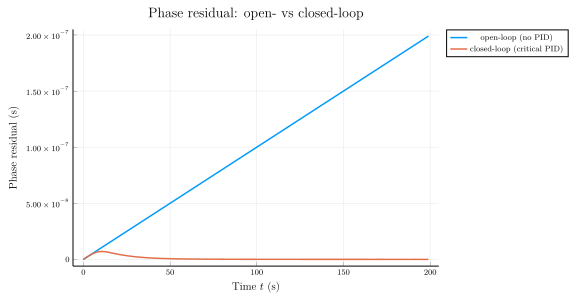
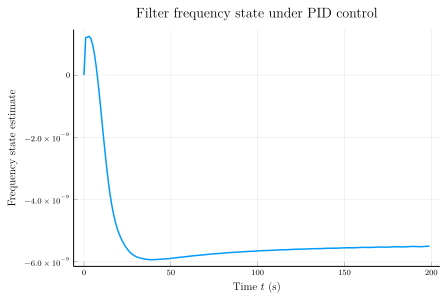
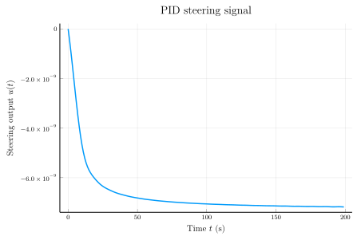

Closed-loop steering with critical-damping PID gains
predict!(::StandardKalmanFilter, …; steering = …) accepts an additive correction vector applied to the predicted state mean. The bundled PIDController computes that correction from the filter's current phase / frequency estimate; together they form a discrete-time closed-loop control system that drives a clock toward zero phase residual.
This tutorial:
- Picks PI gains
(g_p, g_i)analytically for critical damping of the dominant phase-loop dynamics. - Drives a
ThreeStateClockwith a constant fractional frequency offset (a deterministic drift the controller has to null). - Runs a paired simulation — open-loop (no steering) versus closed-loop (PID steering) — on the same noise realisation.
- Plots phase, frequency estimate, and the steering signal over time.
This is the closed-loop counterpart of Tracking a single clock with the Kalman filter.
using SigmaTau
using LinearAlgebra
using RandomCritical-damping derivation
Treat the phase loop in continuous time. The plant integrates the frequency state into phase, $\dot{x}_\text{phase} = x_\text{freq}$, and the PI law adds $\text{steer} = -g_p x_\text{phase} - g_i \int x_\text{phase}$ to the frequency channel each step. Eliminating the integral gives the closed-loop ODE
\[\ddot{x}_\text{phase} + g_p \dot{x}_\text{phase} + g_i x_\text{phase} = 0,\]
a second-order linear system with natural frequency $\omega_n = \sqrt{g_i}$ and damping ratio $\zeta = g_p / (2 \omega_n)$. Critical damping (no overshoot, fastest non-oscillatory settling) is $\zeta = 1$, which fixes
\[g_p = 2 \sqrt{g_i}.\]
Choosing $\omega_n = 0.2$ rad/s gives a 2 % settling time of $\approx 4 / (\zeta \omega_n) = 20$ s — reasonable for a 1 s discretisation step.
ω_n = 0.2
g_i = ω_n^2 # 0.04
g_p = 2 * ω_n # 0.4
g_d = 0.0 # PI only — keep the analytical match
@info "Critical-damping PI gains" ω_n ζ=g_p / (2 * sqrt(g_i)) g_p g_i┌ Info: Critical-damping PI gains
│ ω_n = 0.2
│ ζ = 1.0
│ g_p = 0.4
└ g_i = 0.04000000000000001Clock and simulation setup
Constant fractional-frequency offset of $10^{-9}$. With $\tau = 1$ s, the un-steered phase drifts at 1 ns per second. Add a small white-phase-modulation measurement floor; no other process noise so the controller dynamics are easy to read off the plot.
τ = 1.0
N = 200
f_offset = 1e-9 # fractional freq offset
q0 = 1e-24 # WPM measurement noise
model = ThreeStateClock(tau=τ, q0=q0, q1=0.0, q2=0.0, q3=0.0)
Random.seed!(20260509)Random.TaskLocalRNG()Truth tape: deterministic linear drift plus tiny WPM jitter.
phase_true = [k * τ * f_offset for k in 0:N-1]
z = phase_true .+ sqrt(q0) .* randn(N)200-element Vector{Float64}:
-1.6356253900040196e-12
9.98818598157196e-10
1.9992771314170518e-9
2.9997819913756813e-9
4.000015387777744e-9
5.000505802725565e-9
6.000275583726963e-9
7.000042121402206e-9
7.998326278042727e-9
8.998526347157196e-9
⋮
1.9099881896962654e-7
1.9200284158578303e-7
1.9299980485177466e-7
1.9399984199768564e-7
1.949998648493734e-7
1.9600009003622968e-7
1.970000218915026e-7
1.979994201532767e-7
1.9900016029844427e-7Open-loop run (no steering)
predict! without the steering keyword is the un-controlled case. The filter still tracks the phase, but nothing drives it back to zero — the clock keeps drifting.
est_open = StandardKalmanFilter([z[1], 0.0, 0.0], 1e-12 * Matrix(I(3)))
phase_est_open = zeros(N)
for k in 1:N
predict!(est_open, model, τ)
update!(est_open, model, z[k])
phase_est_open[k] = est_open.x[1]
endClosed-loop run (critical-damping PID)
step!(pid, est.x) updates the controller from the latest filter estimate; steer_to_correction(pid.last_steer, 3, τ) packages the scalar steer into the 3-state correction vector that predict!(…; steering = …) expects (phase row gets $s \cdot \tau$, frequency row gets $s$, drift row stays zero).
est_closed = StandardKalmanFilter([z[1], 0.0, 0.0], 1e-12 * Matrix(I(3)))
pid = PIDController(g_p=g_p, g_i=g_i, g_d=g_d)
phase_est_closed = zeros(N)
freq_est_closed = zeros(N)
steer_history = zeros(N)
for k in 1:N
corr = steer_to_correction(pid.last_steer, 3, τ)
predict!(est_closed, model, τ; steering=corr)
update!(est_closed, model, z[k])
step!(pid, est_closed.x)
phase_est_closed[k] = est_closed.x[1]
freq_est_closed[k] = est_closed.x[2]
steer_history[k] = pid.last_steer
endPhase residual: open- vs closed-loop
Open-loop residual grows linearly with time (the un-controlled drift); closed-loop settles to zero on the analytical 20 s timescale after a single critically-damped excursion.
using Plots
t = (0:N-1) .* τ
plot(t, phase_est_open;
label = "open-loop (no PID)",
xlabel = raw"Time \(t\) (s)",
ylabel = "Phase residual (s)",
title = "Phase residual: open- vs closed-loop",
lw = 1.5)
plot!(t, phase_est_closed;
label = "closed-loop (critical PID)",
lw = 1.5)
Frequency estimate
The closed-loop frequency estimate jumps to $-f_\text{offset}$ almost immediately — the controller folds the negative of the drift into the propagation, which the filter then absorbs as the new frequency estimate. (The open-loop estimate converges to the true offset $+f_\text{offset}$; the closed-loop one converges to zero net frequency.)
plot(t, freq_est_closed;
label = false,
xlabel = raw"Time \(t\) (s)",
ylabel = "Frequency state estimate",
title = "Filter frequency state under PID control",
lw = 1.5)
Steering signal
The PID output. Settles to a constant value once the loop has locked — that constant is the negative of the constant frequency offset, exactly the signal the controller needs to inject to keep the phase stationary.
plot(t, steer_history;
label = false,
xlabel = raw"Time \(t\) (s)",
ylabel = raw"Steering output \(u(t)\)",
title = "PID steering signal",
lw = 1.5)
Settling check
Print the open- and closed-loop endpoint phase to confirm the analytical settling-time prediction. With $\zeta = 1$, $\omega_n = 0.2$ rad/s, the closed-loop residual should be three orders of magnitude smaller than the open-loop drift after $N \tau = 200$ s.
unsteered_endpoint = N * τ * f_offset
@info "Endpoint phase residuals" open=phase_est_open[end] closed=phase_est_closed[end] ratio=abs(phase_est_closed[end]) / unsteered_endpoint┌ Info: Endpoint phase residuals
│ open = 1.990001181997239e-7
│ closed = 2.363893387689226e-11
└ ratio = 0.0001181946693844613